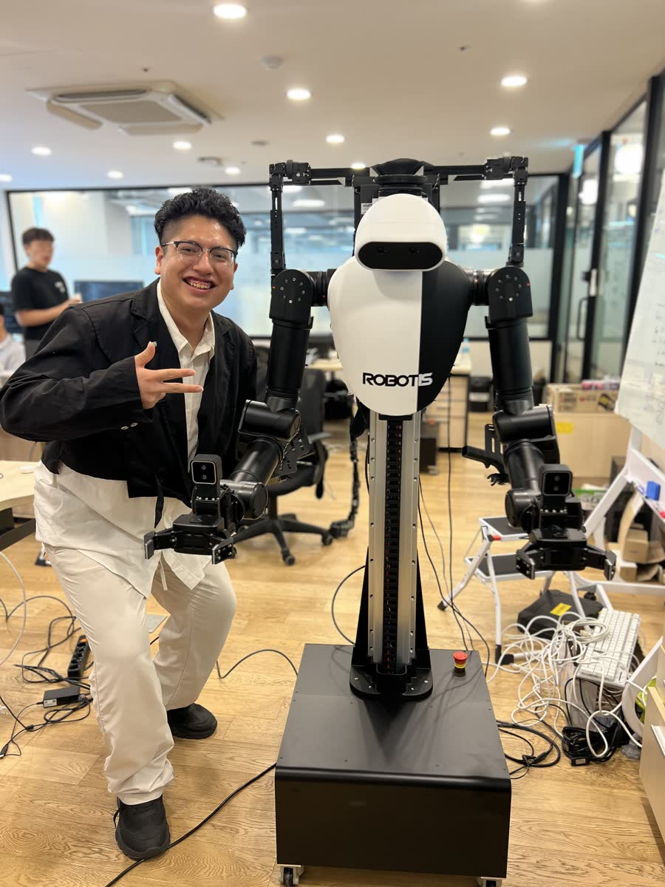
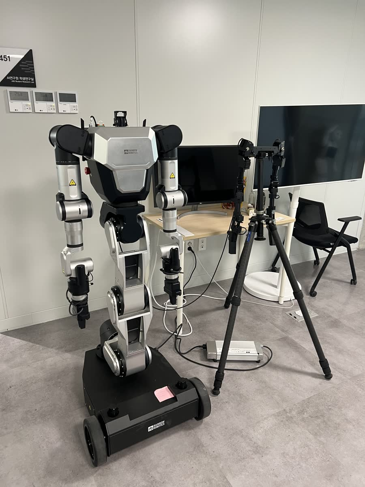
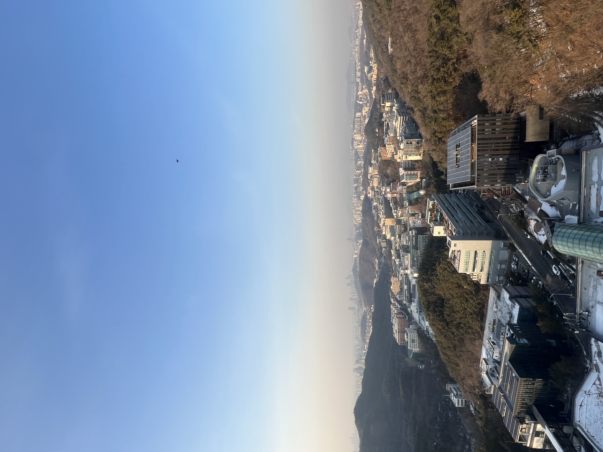

Eduardo Ayerve Cruz
I am currently an AI & Robotics Researcher at Tommoro Robotics in Seoul, South Korea, where I work on cutting-edge physical AI applications.
I graduated from Seoul National University with a B.S. in Computer Science and Engineering, supported by the Global Korea Scholarship (2020–2025). My academic journey began at the High Performance High Schools for the Gifted (COAR) in Peru.
During university, I developed expertise in AI, focusing on computer vision, natural language processing, deep learning for robotics, transformers, and neural network optimization.
My research internships include work at the RUBIS Lab (Prof. Chang-Gun Lee), developing TTS models for mental health support, and at the BioIntelligence Lab (Prof. Byoung-Tak Zhang), creating voice-controlled robotic interfaces and integrated training consoles.

Experience
Tommoro Robotics – AI & Robotics Researcher
Mar 2025 – Present
Working on AI and robotics projects to automate factory processes, optimize robot training and inference, and develop interactive humanoid robots. Key contributions include creating pipelines for robot decision-making, testing and integrating AI models, and building speech-to-action systems for real-time human-robot interaction.
View MoreInternships

BioIntelligence Lab – Research Intern
Jan 2025 – Jun 2025
Trained robotic systems (Mobile Aloha, RB-Y1) to perform real-world manipulation tasks using Vision-Language-Action (VLA) models such as Pi0 and ACT. Collected and processed training data, and fine-tuned models to improve performance and reliability in real-world environments.
View More
RUBIS Lab – Research Intern
Nov 2024 – Mar 2025
Contributed to an AI platform supporting adolescent mental health, where students interact with an AI avatar that provides personalized guidance. Developed the TTS feature for natural voice responses and validated the full pipeline (STT → LLM → TTS → MuseTalk) to ensure smooth, real-time interaction.
View MoreProjects
Selected work
Amore Pacific Packaging Automation
Robotics & AI Project
Developed the Decision Orchestrator, a company tool that manages robot actions for packaging logistics automation at a factory in Osan. The system handles picking, placing products, and packaging them safely. Built pipelines for robot decision-making with AI inference capabilities. Delivered a PoC demonstration with over 90% success rate.
The White and Black Rat Duel
3D Platformer Game
A charming 3D platformer where you play as a white rat competing against a black rat in an epic cooking showdown. Journey through imaginative kitchen-inspired worlds—from bustling orchards to a massive chopping board to stretches of dough—gathering ingredients, overcoming challenges, and battling quirky opponents. Pick up special abilities to gain the upper hand, and prepare for an unforgettable showdown.
Education
Academic history
B.S. in Computer Science
Seoul National University, Seoul, South Korea
Mar 2021 – Aug 2025 (Expected)
Studies in Economics
Pontifical Catholic University of Peru (PUCP), Lima, Peru
Mar 2019 – Feb 2020
Completed one year of study
International Baccalaureate Diploma Programme (IBDP)
Colegio Mayor Secundario Presidente del Perú, Peru
2016 – 2018
- IB Score: 37/45
- Final GPA: 18.78/20.00 — Valedictorian
Hobbies